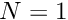
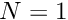
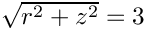
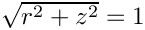
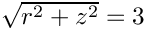
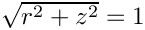

In this document we discuss the spatially-adaptive finite-element-based solution of the 3D Helmholtz equation in cylindrical polar coordinates, using a Fourier-decomposition of the solution in the azimuthal direction.
This solution corresponds to the superposition of several outgoing waves that emerge from the unit sphere.
The two plots below show a comparison between the exact and computed solutions for , a Fourier wavenumber of  , and a (squared) Helmholtz wavenumber of .
, and a (squared) Helmholtz wavenumber of .
shows the main differences required to discretise the computational domain with an adaptive, unstructured mesh:
#include <complex>
#include <cmath>
#include "generic.h"
#include "fourier_decomposed_helmholtz.h"
#include "meshes/triangle_mesh.h"
#include "oomph_crbond_bessel.h"
using namespace oomph;
using namespace std;
{
double K=3.0*MathematicalConstants::Pi;
std::complex<double>
I(0.0,1.0);
void get_exact_u(
const Vector<double>& x, Vector<double>& u)
{
double R=sqrt(x[0]*x[0]+x[1]*x[1]);
double theta;
theta=atan2(x[0],x[1]);
double bessel_offset=0.5;
double order_max_in=double(
N_terms-1)+bessel_offset;
double order_max_out=0;
CRBond_Bessel::bessjyv(order_max_in,
kr,
order_max_out,
&jv[0],&yv[0],
&djv[0],&dyv[0]);
complex<double> u_ex(0.0,0.0);
{
double p=Legendre_functions_helper::plgndr2(i,0,cos(theta));
u_ex+=(2.0*i+1.0)*pow(
I,i)*
sqrt(MathematicalConstants::Pi/(2.0*kr))*jv[i]*p;
}
u[0]=u_ex.real();
u[1]=u_ex.imag();
}
{
unsigned nr=20;
unsigned nz=100;
unsigned nt=40;
ofstream some_file("planar_wave.dat");
for (unsigned i_t=0;i_t<nt;i_t++)
{
double t=2.0*MathematicalConstants::Pi*double(i_t)/double(nt-1);
some_file << "ZONE I="<< nz << ", J="<< nr << std::endl;
Vector<double> x(2);
Vector<double> u(2);
for (unsigned i=0;i<nr;i++)
{
x[0]=0.001+double(i)/double(nr-1);
for (unsigned j=0;j<nz;j++)
{
x[1]=double(j)/double(nz-1);
complex<double> uu=complex<double>(u[0],u[1])*exp(-
I*t);
some_file << x[0] << " " << x[1] << " "
<< uu.real() << " " << uu.imag() << "\n";
}
}
}
}
}
{
std::complex<double>
I(0.0,1.0);
void get_exact_u(
const Vector<double>& x, Vector<double>& u)
{
double R=sqrt(x[0]*x[0]+x[1]*x[1]);
double theta;
theta=atan2(x[0],x[1]);
double bessel_offset=0.5;
double order_max_in=double(
N_terms-1)+bessel_offset;
double order_max_out=0;
CRBond_Bessel::bessjyv(order_max_in,
kr,
order_max_out,
&jv[0],&yv[0],
&djv[0],&dyv[0]);
complex<double> u_ex(0.0,0.0);
{
double p=Legendre_functions_helper::plgndr2(i,
N_fourier,
cos(theta));
u_ex+=
Coeff[i]*sqrt(MathematicalConstants::Pi/(2.0*kr))*(jv[i]+
I*yv[i])*p;
}
u[0]=u_ex.real();
u[1]=u_ex.imag();
}
{
flux=std::complex<double>(0.0,0.0);
double R=sqrt(x[0]*x[0]+x[1]*x[1]);
double theta;
theta=atan2(x[0],x[1]);
double bessel_offset=0.5;
double order_max_in=double(
N_terms-1)+bessel_offset;
double order_max_out=0;
CRBond_Bessel::bessjyv(order_max_in,
kr,
order_max_out,
&jv[0],&yv[0],
&djv[0],&dyv[0]);
complex<double> u_ex(0.0,0.0);
{
double p=Legendre_functions_helper::plgndr2(i,
N_fourier,
cos(theta));
flux-=
Coeff[i]*sqrt(MathematicalConstants::Pi/(2.0*kr))*p*
( k*(djv[i]+
I*dyv[i]) - (0.5*(jv[i]+
I*yv[i])/R) );
}
}
}
template<class ELEMENT>
{
public:
void actions_before_newton_solve(){}
void actions_after_newton_solve(){}
void doc_solution(DocInfo& doc_info);
void actions_before_newton_convergence_check()
{
if (!CommandLineArgs::command_line_flag_has_been_set("--square_domain"))
{
Helmholtz_outer_boundary_mesh_pt->setup_gamma();
}
}
void actions_before_adapt();
void actions_after_adapt();
void check_gamma(DocInfo& doc_info);
private:
void create_outer_bc_elements();
void create_flux_elements_on_inner_boundary();
void delete_face_elements( Mesh* const & boundary_mesh_pt)
{
unsigned n_element = boundary_mesh_pt->nelement();
for(unsigned e=0;e<n_element;e++)
{
delete boundary_mesh_pt->element_pt(e);
}
boundary_mesh_pt->flush_element_and_node_storage();
}
#ifdef ADAPTIVE
RefineableTriangleMesh<ELEMENT>* Bulk_mesh_pt;
#else
TriangleMesh<ELEMENT>* Bulk_mesh_pt;
#endif
FourierDecomposedHelmholtzDtNMesh<ELEMENT>* Helmholtz_outer_boundary_mesh_pt;
Mesh* Helmholtz_inner_boundary_mesh_pt;
ofstream Trace_file;
};
template<class ELEMENT>
{
if (!CommandLineArgs::command_line_flag_has_been_set("--square_domain"))
{
delete_face_elements(Helmholtz_outer_boundary_mesh_pt);
}
delete_face_elements(Helmholtz_inner_boundary_mesh_pt);
rebuild_global_mesh();
}
template<class ELEMENT>
{
unsigned n_element = Bulk_mesh_pt->nelement();
for(unsigned e=0;e<n_element;e++)
{
ELEMENT *el_pt = dynamic_cast<ELEMENT*>(Bulk_mesh_pt->element_pt(e));
}
create_flux_elements_on_inner_boundary();
if (!CommandLineArgs::command_line_flag_has_been_set("--square_domain"))
{
create_outer_bc_elements();
}
rebuild_global_mesh();
}
template<class ELEMENT>
{
Trace_file.open("RESLT/trace.dat");
double x_c=0.0;
double y_c=0.0;
double r_min=1.0;
double r_max=3.0;
Circle* inner_circle_pt=new Circle(x_c,y_c,r_min);
Circle* outer_circle_pt=new Circle(x_c,y_c,r_max);
Vector<TriangleMeshCurveSection*> outer_boundary_line_pt(4);
unsigned n_segments = 20;
Vector<Vector<double> > boundary_vertices(2);
boundary_vertices[0].resize(2);
boundary_vertices[0][0]=0.0;
boundary_vertices[0][1]=-r_min;
boundary_vertices[1].resize(2);
boundary_vertices[1][0]=0.0;
boundary_vertices[1][1]=-r_max;
unsigned boundary_id=0;
outer_boundary_line_pt[0]=
new TriangleMeshPolyLine(boundary_vertices,boundary_id);
if (CommandLineArgs::command_line_flag_has_been_set("--square_domain"))
{
Vector<Vector<double> > boundary_vertices(4);
boundary_vertices[0].resize(2);
boundary_vertices[0][0]=0.0;
boundary_vertices[0][1]=-r_max;
boundary_vertices[1].resize(2);
boundary_vertices[1][0]=r_max;
boundary_vertices[1][1]=-r_max;
boundary_vertices[2].resize(2);
boundary_vertices[2][0]=r_max;
boundary_vertices[2][1]=r_max;
boundary_vertices[3].resize(2);
boundary_vertices[3][0]=0.0;
boundary_vertices[3][1]=r_max;
boundary_id=1;
outer_boundary_line_pt[1]=
new TriangleMeshPolyLine(boundary_vertices,boundary_id);
}
else
{
double s_start = -0.5*MathematicalConstants::Pi;
double s_end = 0.5*MathematicalConstants::Pi;
boundary_id = 1;
outer_boundary_line_pt[1]=
new TriangleMeshCurviLine(outer_circle_pt,
s_start,
s_end,
n_segments,
boundary_id);
}
boundary_vertices[0][0]=0.0;
boundary_vertices[0][1]=r_max;
boundary_vertices[1][0]=0.0;
boundary_vertices[1][1]=r_min;
boundary_id=2;
outer_boundary_line_pt[2]=
new TriangleMeshPolyLine(boundary_vertices,boundary_id);
double s_start = 0.5*MathematicalConstants::Pi;
double s_end = -0.5*MathematicalConstants::Pi;
boundary_id = 3;
outer_boundary_line_pt[3]=
new TriangleMeshCurviLine(inner_circle_pt,
s_start,
s_end,
n_segments,
boundary_id);
TriangleMeshClosedCurve *outer_boundary_pt =
new TriangleMeshClosedCurve(outer_boundary_line_pt);
TriangleMeshParameters triangle_mesh_parameters(outer_boundary_pt);
double element_area = 0.1;
triangle_mesh_parameters.element_area() = element_area;
#ifdef ADAPTIVE
Bulk_mesh_pt=new RefineableTriangleMesh<ELEMENT>(triangle_mesh_parameters);
Bulk_mesh_pt->spatial_error_estimator_pt()=new Z2ErrorEstimator;
Bulk_mesh_pt->min_permitted_error()=0.00004;
Bulk_mesh_pt->max_permitted_error()=0.0001;
#else
Bulk_mesh_pt= new TriangleMesh<ELEMENT>(triangle_mesh_parameters);
#endif
Bulk_mesh_pt->output("mesh.dat");
Bulk_mesh_pt->output_boundaries("boundaries.dat");
if (!CommandLineArgs::command_line_flag_has_been_set("--square_domain"))
{
Helmholtz_outer_boundary_mesh_pt=
new FourierDecomposedHelmholtzDtNMesh<ELEMENT>(
create_outer_bc_elements();
}
Helmholtz_inner_boundary_mesh_pt=new Mesh;
create_flux_elements_on_inner_boundary();
add_sub_mesh(Bulk_mesh_pt);
add_sub_mesh(Helmholtz_inner_boundary_mesh_pt);
if (!CommandLineArgs::command_line_flag_has_been_set("--square_domain"))
{
add_sub_mesh(Helmholtz_outer_boundary_mesh_pt);
}
build_global_mesh();
unsigned n_element = Bulk_mesh_pt->nelement();
for(unsigned i=0;i<n_element;i++)
{
ELEMENT *el_pt = dynamic_cast<ELEMENT*>(Bulk_mesh_pt->element_pt(i));
}
cout <<"Number of equations: " << assign_eqn_numbers() << std::endl;
}
template<class ELEMENT>
{
Helmholtz_outer_boundary_mesh_pt->setup_gamma();
ofstream some_file;
char filename[100];
sprintf(filename,"%s/gamma_test%i.dat",doc_info.directory().c_str(),
doc_info.number());
some_file.open(filename);
unsigned nel=Helmholtz_outer_boundary_mesh_pt->nelement();
for (unsigned e=0;e<nel;e++)
{
FourierDecomposedHelmholtzDtNBoundaryElement<ELEMENT>* el_pt=
dynamic_cast<FourierDecomposedHelmholtzDtNBoundaryElement<ELEMENT>*>
(Helmholtz_outer_boundary_mesh_pt->element_pt(e));
const unsigned n_intpt =el_pt->integral_pt()->nweight();
Vector<std::complex<double> > gamma(
Helmholtz_outer_boundary_mesh_pt->gamma_at_gauss_point(el_pt));
for(unsigned ipt=0;ipt<n_intpt;ipt++)
{
Vector<double> x(el_pt->dim()+1,0.0);
unsigned n=el_pt->dim();
Vector<double> s(n,0.0);
for(unsigned i=0;i<n;i++)
{
s[i]=el_pt->integral_pt()->knot(ipt,i);
}
el_pt->interpolated_x(s,x);
complex<double> flux;
some_file << atan2(x[0],x[1]) << " "
<< gamma[ipt].real() << " "
<< gamma[ipt].imag() << " "
<< flux.real() << " "
<< flux.imag() << " "
<< std::endl;
}
}
some_file.close();
}
template<class ELEMENT>
{
ofstream some_file;
char filename[100];
unsigned npts=5;
sprintf(filename,"%s/soln%i.dat",doc_info.directory().c_str(),
doc_info.number());
some_file.open(filename);
Bulk_mesh_pt->output(some_file,npts);
some_file.close();
sprintf(filename,"%s/exact_soln%i.dat",doc_info.directory().c_str(),
doc_info.number());
some_file.open(filename);
some_file.close();
double error,norm;
sprintf(filename,"%s/error%i.dat",doc_info.directory().c_str(),
doc_info.number());
some_file.open(filename);
error,norm);
some_file.close();
cout << "\nNorm of error : " << sqrt(error) << std::endl;
cout << "Norm of solution: " << sqrt(norm) << std::endl << std::endl;
Bulk_mesh_pt->compute_norm(norm);
Trace_file << norm << std::endl;
if (!CommandLineArgs::command_line_flag_has_been_set("--square_domain"))
{
check_gamma(doc_info);
}
}
template<class ELEMENT>
{
unsigned b=1;
unsigned n_element = Bulk_mesh_pt->nboundary_element(b);
for(unsigned e=0;e<n_element;e++)
{
ELEMENT* bulk_elem_pt = dynamic_cast<ELEMENT*>(
Bulk_mesh_pt->boundary_element_pt(b,e));
int face_index = Bulk_mesh_pt->face_index_at_boundary(b,e);
FourierDecomposedHelmholtzDtNBoundaryElement<ELEMENT>* flux_element_pt = new
FourierDecomposedHelmholtzDtNBoundaryElement<ELEMENT>(bulk_elem_pt,
face_index);
Helmholtz_outer_boundary_mesh_pt->add_element_pt(flux_element_pt);
flux_element_pt->
set_outer_boundary_mesh_pt(Helmholtz_outer_boundary_mesh_pt);
}
}
template<class ELEMENT>
{
unsigned b=3;
unsigned n_element = Bulk_mesh_pt->nboundary_element(b);
for(unsigned e=0;e<n_element;e++)
{
ELEMENT* bulk_elem_pt = dynamic_cast<ELEMENT*>(
Bulk_mesh_pt->boundary_element_pt(b,e));
int face_index = Bulk_mesh_pt->face_index_at_boundary(b,e);
FourierDecomposedHelmholtzFluxElement<ELEMENT>* flux_element_pt = new
FourierDecomposedHelmholtzFluxElement<ELEMENT>(bulk_elem_pt,face_index);
Helmholtz_inner_boundary_mesh_pt->add_element_pt(flux_element_pt);
}
}
int main(
int argc,
char **argv)
{
CommandLineArgs::setup(argc,argv);
CommandLineArgs::specify_command_line_flag("--square_domain");
CommandLineArgs::parse_and_assign();
CommandLineArgs::doc_specified_flags();
{
unsigned n=3;
double bessel_offset=0.5;
ofstream bessely_file("besselY.dat");
ofstream bessely_deriv_file("dbesselY.dat");
ofstream besselj_file("besselJ.dat");
ofstream besselj_deriv_file("dbesselJ.dat");
Vector<double> jv(n+1);
Vector<double> yv(n+1);
Vector<double> djv(n+1);
Vector<double> dyv(n+1);
double x_min=0.5;
double x_max=5.0;
unsigned nplot=100;
for (unsigned i=0;i<nplot;i++)
{
double x=x_min+(x_max-x_min)*double(i)/double(nplot-1);
double order_max_in=double(n)+bessel_offset;
double order_max_out=0;
CRBond_Bessel::bessjyv(order_max_in,x,
order_max_out,
&jv[0],&yv[0],
&djv[0],&dyv[0]);
bessely_file << x << " ";
for (unsigned j=0;j<=n;j++)
{
bessely_file << yv[j] << " ";
}
bessely_file << std::endl;
besselj_file << x << " ";
for (unsigned j=0;j<=n;j++)
{
besselj_file << jv[j] << " ";
}
besselj_file << std::endl;
bessely_deriv_file << x << " ";
for (unsigned j=0;j<=n;j++)
{
bessely_deriv_file << dyv[j] << " ";
}
bessely_deriv_file << std::endl;
besselj_deriv_file << x << " ";
for (unsigned j=0;j<=n;j++)
{
besselj_deriv_file << djv[j] << " ";
}
besselj_deriv_file << std::endl;
}
bessely_file.close();
besselj_file.close();
bessely_deriv_file.close();
besselj_deriv_file.close();
}
{
unsigned n=3;
ofstream some_file("legendre3.dat");
unsigned nplot=100;
for (unsigned i=0;i<nplot;i++)
{
double x=double(i)/double(nplot-1);
some_file << x << " ";
for (unsigned j=0;j<=n;j++)
{
some_file << Legendre_functions_helper::plgndr2(n,j,x) << " ";
}
some_file << std::endl;
}
some_file.close();
}
#ifdef ADAPTIVE
TFourierDecomposedHelmholtzElement<3> > >
problem;
#else
#endif
DocInfo doc_info;
doc_info.set_directory("RESLT");
{
#ifdef ADAPTIVE
unsigned max_adapt=1;
#else
#endif
}
}
 . We impose the Sommerfeld radiation condition at the outer boundary of the computational domain at , using a Dirichlet-to-Neumann mapping, and apply flux boundary condition on the surface of the unit-sphere (where ) such that the exact solution is given by
. We impose the Sommerfeld radiation condition at the outer boundary of the computational domain at , using a Dirichlet-to-Neumann mapping, and apply flux boundary condition on the surface of the unit-sphere (where ) such that the exact solution is given by